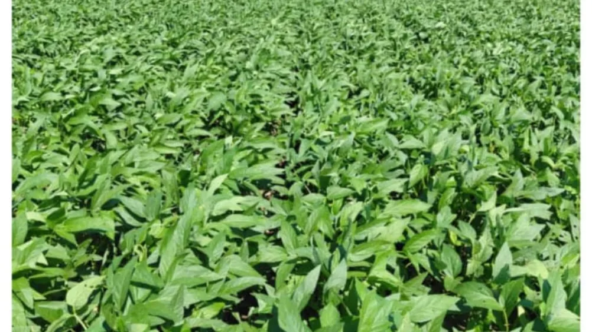

Soya beans · Glycine max
Soya beans
Soya beans are grown across both Season A and Season B, rotated with cereal crops to support Normah's soil-first agronomy and nitrogen management.
Season AEarly Mar–Jun
Season BJul–Dec
Grown at Normah
Soya beans are part of Normah's rotation with cereal crops such as maize and sorghum, supporting the soil-first agronomy the farm uses in place of continuous single-crop planting. They are grown in both Season A and Season B.
